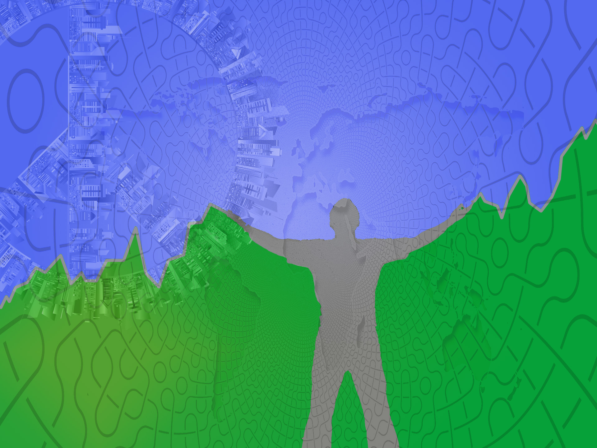

Here are a few images that I have made.
One of them are a school project were we should do a portrait in the adobe program.
My best friend turned 40 and I made an image on him and his wife for his birthday.
Betydlig are a company I will start and I just played around a bit.

This youtube clip are from Stockholm Hippie Market and me and my friend made a teaser movie for one of the markets.
EVENT ORGANIZER
Here is a draft of parties and events that I have been involved in and organized. It's everything from Spontandansens främjande (SPDIF) crew where I was the co-founder of. Eternity “Evigheten” a festival in Värmland which is usually organized by UBV where SPDIF had a guest organizer for a year and I was apart of that. Another organizer called Stockholm Hippie Market usually the people from UBV starts that market and event. I was apart of that and arranged three events over a years time.
Also check out the youtube video from the chillivalen from Stockholm Hippie Market 2019 so that you can feel the vibe.